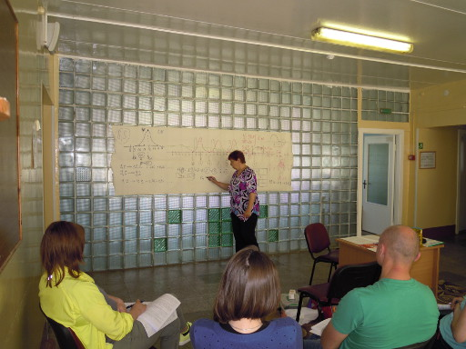

Verein
Der Verein Belarus Diabetes hat sich aus dem „Projekt Belarus Bezirk Affoltern“ gebildet.
Dieses organisierte zwischen 2002 und 2008 Aufenthalte zur Erholung für strahlengeschädigte Tschernobyl-Kinder aus Belarus.
In dieser Zeit weilten insgesamt 140 Kinder im Bezirk Affoltern.
2013 wurde der Verein „Belarus Diabetes“ gegründet.
Jährlich werden 2 bis 3 Schulungen mit je 6 Kindern mit Ihren Eltern unterstützt.
Wir wollen benachteiligten Diabetes-Kinder von Belarus helfen, damit sie ein möglichst normales Leben führen können.
Mit einer Mitgliedschaft unterstützen Sie uns ideell oder finanziell.

Ludmila erklärt den Zusammenhang Blutzuckerwert und Insulin